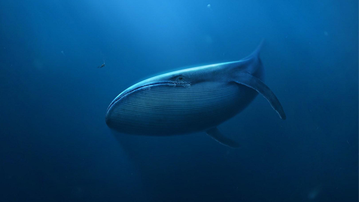

BALEIA AZUL: O JOGO CEIFADOR
O nome parece inofensivo mas esta baleia azul é um predador de adolescentes com problemas de autoestima, depressão ou isolamento. Quanto mais frágeis, mais aptos a entrarem neste jogo perigoso, que os incita à automutilação e ao suicídio. O fenómeno começou na Rússia, em 2015, rapidamente disseminou-se através da internet. Rapazes e raparigas de vários países cumpriram os desafios até ao fim e perderam a vida. Apesar de ter pouca adesão em Portugal, também por cá deixou marcas. Sem saber regras, aceita-se o convite para jogar um jogo arriscado: são 50 dias de desafios, quase sempre, a envolverem a automutilação e outras atitudes destrutivas. Cortar a pele com uma lâmina, subir a um telhado, ver filmes de terror, fazem parte das tarefas ditadas por um “curador” que nunca revela a identidade. O jovem recrutado nas redes sociais, fica obrigado a provar com vídeos ou fotos que cumpre o que lhe é pedido. Não pode desistir, nem contar nada a ninguém. Mas há um último pedido da Baleia Azul revelado mesmo no fim, um apelo direto ao suicídio: “Tira a tua própria vida.” A mensagem já ceifou algumas jovens vidas, um pouco por todo o mundo. Este fenómeno apanha na rede adolescentes com tendência para comportamentos autolesivos e de suicídio. Em Portugal são cada vez mais os rapazes e as raparigas que chegam às urgências hospitalares com o corpo cortado com navalhas, facas, lâminas e x-atos. Normalmente são casos de miúdos em grande sofrimento psicológico, a atravessar períodos de depressão e tristeza que os fragiliza e transforma em alvos fáceis para jogos do mesmo género. Dependentes da internet, os jovens expõem-se a perigos desconhecidos, arriscam a vida sem medir consequências. Comer cápsulas de detergente, queimar a pele com água a ferver ou comer uma colher de canela são as últimas modas que lhes garantem visibilidade nos vídeos que publicam online. Por isso, é preciso mais vigilância e atenção dos pais e professores. Porque nunca se sabe quando chega o próximo Baleia Azul.
